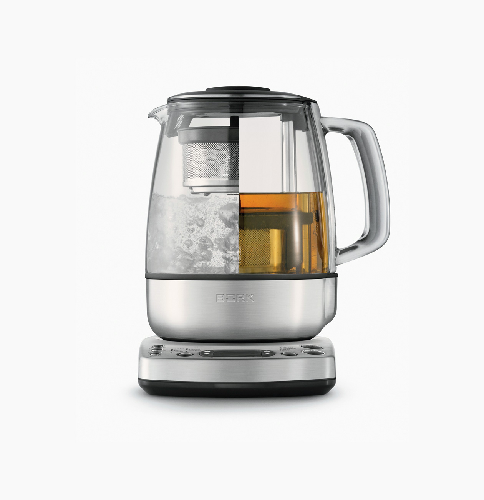

Очистители AC800A и AK810A
- Специально разработанные очистители позволяют поддерживать «здоровье» Вашей техники на протяжении долгих лет.
- Очистители производятся в Австралии, из органических компонентов, которые не причиняют вреда организму.
- Очистители сертифицированы тремя разными организациями (NSF, OMRI, BFA), которые подтверждают, что данные очистители имеют право называться «органическими».
Очиститель накипи д/кофейной станции AC800A
Данный органический очиститель специально разработан для очистки кофейной станции BORK С805.
Очиститель также подходит для декальцинации всего модельного ряда кофейных станций и кофемашин BORK. Очиститель можно использовать для очистки любых чайников.
Технические характеристики
Объем – 4 пакета по 25гр.
25гр достаточно для приготовления 1 литра рабочего раствора.
Срок годности – 5 лет
Дата производства указана на индивидуальном пакете со средством.
Очиститель чайного налёта AK810A
Данный органический очиститель специально разработан для очистки колбы и чайной корзины чайников BORK K810 и K782.
Очиститель также подходит для удаления чайного налета в термосах, в фарфоровых, керамических и стеклянных чайниках и чашках.
Технические характеристики
Объем – 4 пакета по 10гр.
10гр достаточно для приготовления 1,5 литра рабочего раствора.
Срок годности – 5 лет
Дата производства указана на индивидуальном пакете со средством.